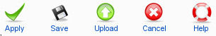

Edit your category items or add new ones from that screen.
Edit your category items or add new ones from that screen.
To access this screen use: Components -> EventList -> Add Category or by clicking a category in the overview
 Super Administrator
Super Administrator  Administrator
Administrator  Manager
Manager

Apply: Saves the Category and returns to the current view.
Save: Saves the Category and returns to the overview.
Uploads: Uploads an image.
Cancel: Cancels the action. Any modification is lost. If an item is opened to edit, the Category Item remains checked-in.
Help: Opens this help screen.
Category: Enter or edit (if needed) the title of the category here.
Alias: Enter or edit (if needed) the alias of the category here. The alias is used in the url, only use url safe characters here. Leave this field blank if you want EventList to create it automatically.
Published: Select Yes to publish this category or No to unpublish. Published categories are displayed on the Frontend and are able to have events assigned to them.
Textfield: Enter or edit (if needed) the description for the category.
Access: This is the user access level. Public, Registered or Special. Events within a category are only accessible at the same or above the selected level.
Group: Select a group to assign it to the category. Only members of this group will be able to assign events to this category.
Image: Select an image for this Category (picture).
Metadata information: Enter or edit (if needed) the Meta Description and the Meta Keywords of the category here.
Group Manager: Add/Edit Groups